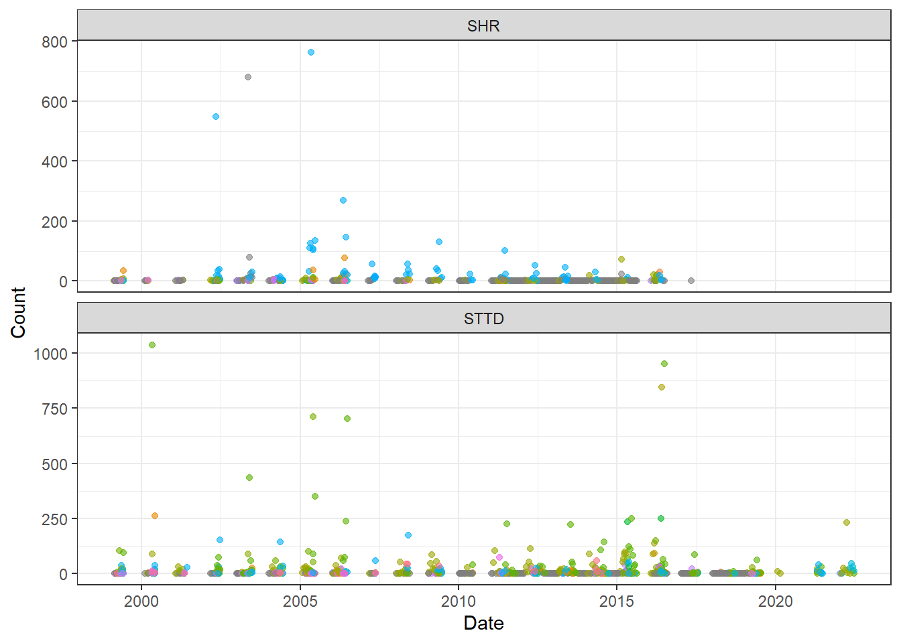

library(tidyverse)
library(lubridate)
ichcatch <- read_csv("FullData.csv")
ichcatch$Date <- as.Date(ichcatch$Date, format = "%Y-%m-%d")
ichcatch$Year <- as.integer(format(ichcatch$Date, format = "%Y"))
#sum by date
#shift between 4/15 and 4/22/2019 in terms of how count is recorded - adjust so we can look at it all together
ich.day.old <- ichcatch %>%
filter(Date < "2019-04-16") %>%
group_by(Year, MonthAbb, Date, Station, ScientificName) %>%
summarize("Tot.Count"= sum(Count, na.rm = T))
ich.day.new <- ichcatch %>%
filter(Date > "2019-04-16") %>%
group_by(Year, MonthAbb, Date, Station, ScientificName) %>%
summarize("Tot.Count"= mean(TotalCountSpecies, na.rm = T))
ich.day.combo <- rbind(ich.day.new, ich.day.old)
#all data
ich.day.combo %>%
ggplot(aes(x = Date, y = Tot.Count, color=ScientificName)) +
geom_point(alpha=0.6) +
facet_wrap(~Station, ncol = 1, scales = "free_y") +
theme_bw() +
labs(x = "Date", y= "Count") +
theme(legend.position="none")